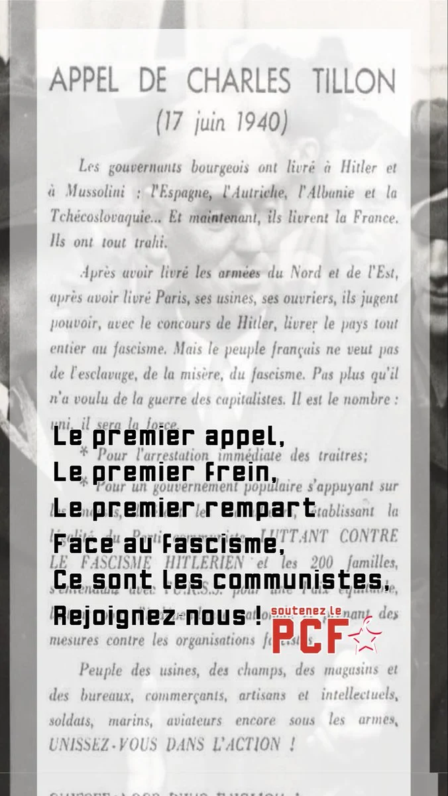

Publication sur X
Contre le racisme et le fascisme. Une publication sur l’engagement communiste
Date de publication sur X · 22 mars 2025
Repères éditoriaux
Le message associe notre appel à l’unité à un document attribué à Charles Tillon.
Texte de la publication sur X
Depuis toujours les communistes luttent et résistent.
Pas de justice dans un système qui écrase.
✊ Contre le racisme, contre le fascisme, contre le capital qui les nourrit.
Unis dans la rue, unis dans la lutte.
#Antifasciste #Antiraciste #Marche22Mars https://t.co/qtm8XaSHOO

Sources
PCF 79 · @79Parti sur X · AR-0005-TW-1903428517292875970
À lire aussi · « Cercle de silence 167 ». La vidéo du rassemblement